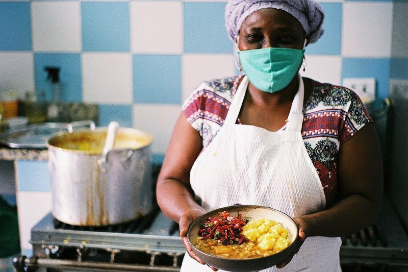
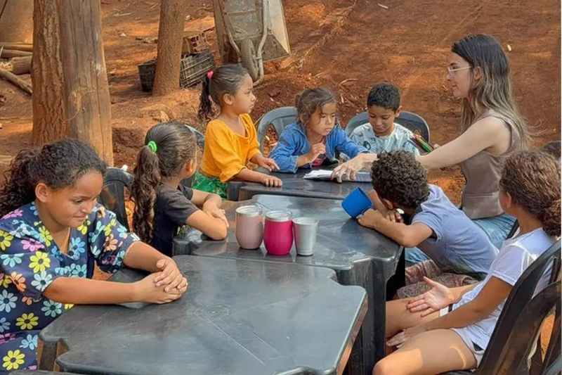
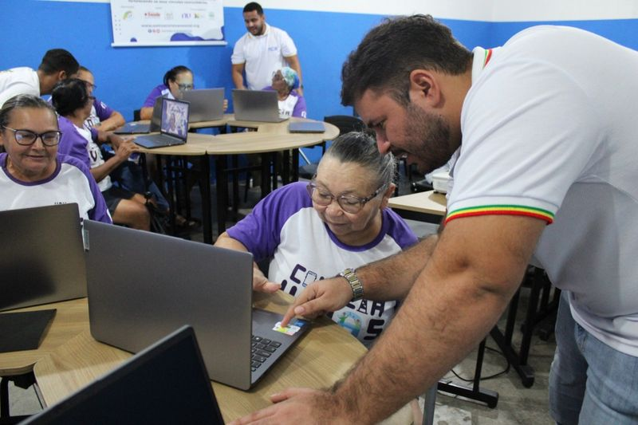

Nossos Projetos
Conheça as iniciativas que mantemos com o apoio de voluntários e doadores.
Projetos em Andamento
Cozinha Solidária

Oferece refeições nutritivas a famílias em situação de insegurança alimentar em Itaquera.
- Público: famílias cadastradas na região
- Frequência: de segunda a sexta, no almoço
- Resultado: mais de 300 refeições por dia
Reforço Escolar

Aulas de apoio em português e matemática para crianças e adolescentes da rede pública.
- Público: estudantes de 7 a 14 anos
- Frequência: três vezes por semana, no contraturno escolar
- Resultado: 80 alunos atendidos por semestre
Inclusão Digital

Cursos de informática básica e uso de serviços digitais para jovens, adultos e idosos.
- Público: jovens a partir de 16 anos, adultos e idosos
- Frequência: turmas aos sábados
- Resultado: 120 alunos certificados em 2025
Campanhas de Doação
Toda doação é aplicada diretamente nos projetos e prestada em relatório anual.
Doação Financeira
Contribua com qualquer valor pelo PIX. A chave é o nosso e-mail de doações:
doacoes@maossolidarias.org.br
Com R$ 50 garantimos 10 refeições na Cozinha Solidária.
Doação de Itens
Recebemos doações na nossa sede, de segunda a sexta, das 9h às 17h:
- Alimentos não perecíveis
- Material escolar
- Computadores e notebooks em funcionamento
Voluntariado
Todos os projetos dependem de voluntários. Escolha onde quer atuar e faça parte da equipe.
Cadastre-se como voluntário